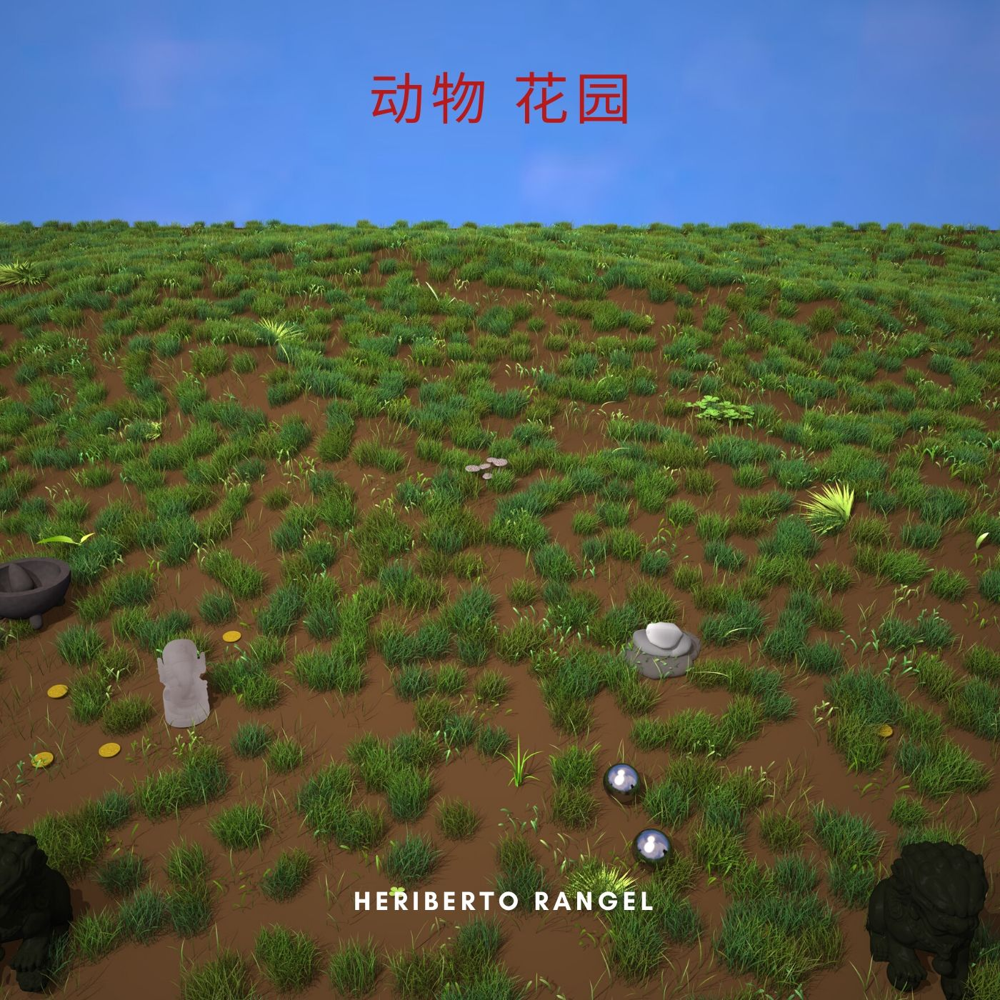

Animal garden
The Animal Garden proyect was born with a "Human perspective of the World " supporting nature, the environment, and the global effort to preserve the climate for future generations

The first song is called animal garden an acoustic piece that make us feel at ease with our life challenges, and very optimistic about the future.
the second song a more fast rock type song inspired by the rock of the 90's is called "see myself", reflects on the way society lives and grows, and the consequences to the world.